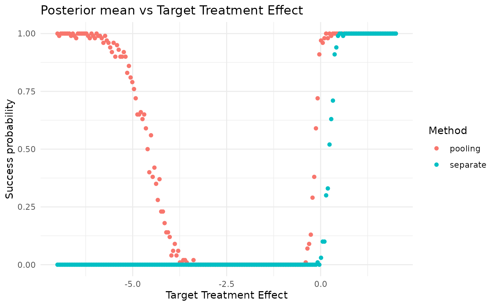
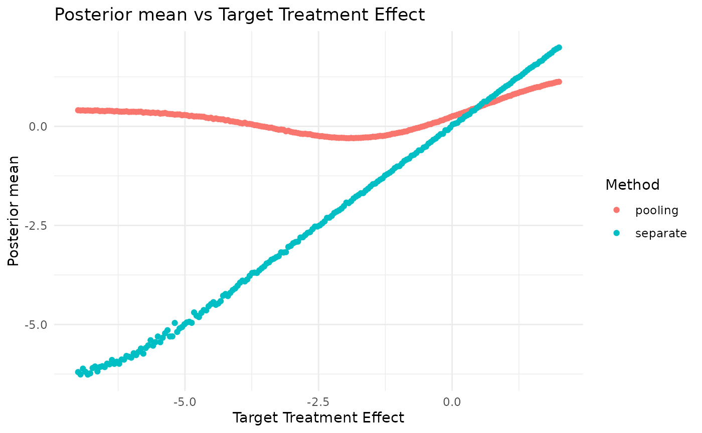
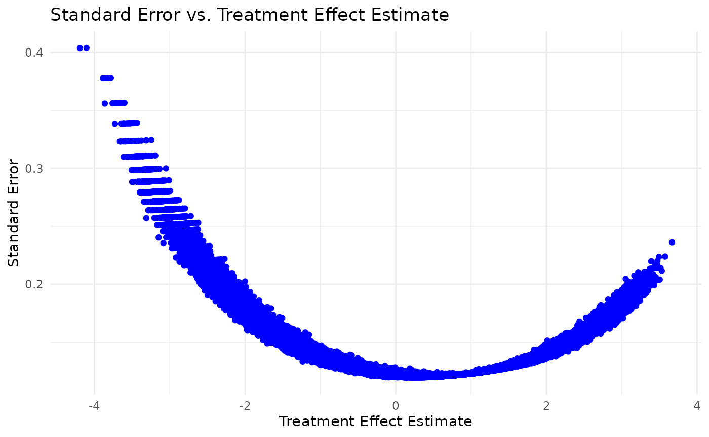

Pooling
Tristan Fauvel, Quinten Health
2026-09-11
Source:vignettes/methods/Pooling_study.Rmd
Pooling_study.RmdLoad the case study configuration
Load the simulation configuration and the Belimumab case study configuration from YAML files.
set.seed(42)
simulation_config <- yaml::yaml.load_file(system.file("conf/simulation_config.yml", package = "RBExT"))
case_study <- "belimumab"
case_study_config <- yaml::yaml.load_file(system.file("conf/case_studies/belimumab.yml", package = "RBExT"))Method and scenario
Create a source_data instance, where information about the source data is stored
source_data <- SourceData$new(case_study_config)
target_sample_size_per_arm <- as.integer(case_study_config$source$total / 2)
method <- "pooling"
method_parameters <- list(
initial_prior = "noninformative", # This corresponds to the fact that the posterior for the adults data is derived from an uninformative prior (for consistency with other methods).
empirical_bayes = FALSE # Corresponds to whether some parameters of the prior are based on observed data.
)Now, we define the model we want to use for inferring the treatment effect in the target study.
model <- Model$new()
model <- model$create(
case_study_config = case_study_config,
method = method,
method_parameters = method_parameters,
source_data = source_data
)Simulation
Separate analysis:
separate_method <- "separate"
method_parameters <- list(
initial_prior = "noninformative", # This corresponds to the fact that the posterior for the adults data is derived from an uninformative prior (for consistency with other methods).
empirical_bayes = FALSE # Corresponds to whether some parameters of the prior are based on observed data.
)
separate_model <- Model$new()
separate_model <- separate_model$create(
case_study_config = case_study_config,
method = separate_method,
method_parameters = method_parameters,
source_data = source_data
)
treatment_effect_values <- seq(-7, 2, length.out = 200)
n <- length(treatment_effect_values)
confidence_level <- simulation_config$confidence_level
null_space <- case_study_config$null_space
n_replicates <- 100
separate_test_decisions <- matrix(rep(0, n * n_replicates), nrow = n)
separate_posterior_means <- matrix(rep(0, n * n_replicates), nrow = n)
separate_posterior_medians <- matrix(rep(0, n * n_replicates), nrow = n)
separate_credible_intervals <- array(rep(0, n * n_replicates * 2), dim = c(n, n_replicates, 2))
separate_prior_proba_no_benefit <- rep(0, n)
theta_0 <- case_study_config$theta_0
critical_value <- simulation_config$critical_value
for (i in seq_along(treatment_effect_values)) {
drift <- treatment_effect_values[i] - source_data$treatment_effect_estimate
target_data <- TargetDataFactory$new()
target_data <- target_data$create(source_data = source_data, case_study_config = case_study_config, target_sample_size_per_arm = target_sample_size_per_arm, treatment_drift = drift, summary_measure_likelihood = source_data$summary_measure_likelihood)
results <- separate_model$simulation_for_given_treatment_effect(target_data = target_data, n_replicates = n_replicates, critical_value = critical_value, theta_0 = theta_0, confidence_level = confidence_level, null_space = null_space, to_return = c("test_decision", "posterior_mean", "posterior_median", "credible_interval"), method = method, case_study = case_study, n_samples_quantiles_estimation = simulation_config$n_samples_quantiles_estimation)
separate_test_decisions[i, ] <- results$test_decisions
separate_posterior_means[i, ] <- results$posterior_means
separate_posterior_medians[i, ] <- results$posterior_medians
separate_credible_intervals[i, , ] <- matrix(results$credible_intervals, nrow = n_replicates)
}
test_decisions <- matrix(rep(0, n * n_replicates), nrow = n)
posterior_means <- matrix(rep(0, n * n_replicates), nrow = n)
posterior_medians <- matrix(rep(0, n * n_replicates), nrow = n)
credible_intervals <- array(rep(0, n * n_replicates * 2), dim = c(n, n_replicates, 2))
prior_proba_no_benefit <- rep(0, n)
for (i in seq_along(treatment_effect_values)) {
drift <- treatment_effect_values[i] - source_data$treatment_effect_estimate # This implies that target_data$treatment_effect <- treatment_effect_values[i]
target_data <- TargetDataFactory$new()
target_data <- target_data$create(source_data = source_data, case_study_config = case_study_config, target_sample_size_per_arm = target_sample_size_per_arm, treatment_drift = drift, summary_measure_likelihood = source_data$summary_measure_likelihood)
# target_data$sampling_approximation <- TRUE
results <- model$simulation_for_given_treatment_effect(target_data = target_data, n_replicates = n_replicates, critical_value = critical_value, theta_0 = theta_0, confidence_level = confidence_level, null_space = null_space, to_return = c("test_decision", "posterior_mean", "posterior_median", "credible_interval"), method = method, case_study = case_study, n_samples_quantiles_estimation = simulation_config$n_samples_quantiles_estimation)
test_decisions[i, ] <- results$test_decisions
posterior_means[i, ] <- results$posterior_means
posterior_medians[i, ] <- results$posterior_medians
credible_intervals[i, , ] <- matrix(results$credible_intervals, nrow = n_replicates)
}
conditional_proba_success <- rowMeans(test_decisions) # Contains Pr(Study success | theta_T)
data <- data.frame(conditional_proba_success = conditional_proba_success, treatment_effect_values = treatment_effect_values, method = method)
separate_conditional_proba_success <- rowMeans(separate_test_decisions) # Contains Pr(Study success | theta_T)
separate_data <- data.frame(conditional_proba_success = separate_conditional_proba_success, treatment_effect_values = treatment_effect_values, method = separate_method)
combined_data <- rbind(data, separate_data)
plt <- ggplot(combined_data, aes(x = treatment_effect_values, y = conditional_proba_success, color = method)) +
geom_point() +
ggplot2::labs(
title = "Posterior mean vs Target Treatment Effect",
x = "Target Treatment Effect",
y = "Success probability",
color = "Method"
) +
theme_minimal()
print(plt)
separate_conditional_posterior_means <- rowMeans(separate_posterior_means)
separate_data <- data.frame(conditional_posterior_means = separate_conditional_posterior_means, treatment_effect_values = treatment_effect_values, method = separate_method)
conditional_posterior_means <- rowMeans(posterior_means)
data <- data.frame(conditional_posterior_means = conditional_posterior_means, treatment_effect_values = treatment_effect_values, method = method)
combined_data <- rbind(data, separate_data)
plt <- ggplot(combined_data, aes(x = treatment_effect_values, y = conditional_posterior_means, color = method)) +
geom_point() +
ggplot2::labs(
title = "Posterior mean vs Target Treatment Effect",
x = "Target Treatment Effect",
y = "Posterior mean",
color = "Method"
) +
theme_minimal()
print(plt)
Standard error vs treatment effect estimate
# Define a vector of treatment effect values to loop over
treatment_effect_values <- seq(-3, 3, by = 0.1)
# Initialize an empty list to store dataframes
data_list <- list()
# Loop over treatment effect values
for (treatment_effect in treatment_effect_values) {
# Calculate the drift
drift <- treatment_effect - source_data$treatment_effect_estimate
# Create target data
target_data <- TargetDataFactory$new()
target_data <- target_data$create(
source_data = source_data,
case_study_config = case_study_config,
target_sample_size_per_arm = target_sample_size_per_arm,
treatment_drift = drift,
summary_measure_likelihood = source_data$summary_measure_likelihood
)
# Generate samples
samples <- target_data$generate(1000)
# Create a dataframe from the samples
data <- data.frame(
treatment_effect = treatment_effect,
treatment_effect_estimate = samples$treatment_effect_estimate,
treatment_effect_standard_error = samples$treatment_effect_standard_error
)
# Append the dataframe to the list
data_list[[length(data_list) + 1]] <- data
}
# Combine all dataframes into a single dataframe
combined_data <- dplyr::bind_rows(data_list)
ggplot(combined_data, aes(x = treatment_effect_estimate, y = treatment_effect_standard_error)) +
geom_point(color = "blue") +
ggplot2::labs(
title = "Standard Error vs. Treatment Effect Estimate",
x = "Treatment Effect Estimate",
y = "Standard Error"
) +
theme_minimal()
## R version 4.2.0 (2022-04-22)
## Platform: x86_64-pc-linux-gnu (64-bit)
## Running under: Ubuntu 24.04.5 LTS
##
## Matrix products: default
## BLAS: /usr/lib/x86_64-linux-gnu/openblas-pthread/libblas.so.3
## LAPACK: /usr/lib/x86_64-linux-gnu/openblas-pthread/libopenblasp-r0.3.26.so
##
## locale:
## [1] LC_CTYPE=C.UTF-8 LC_NUMERIC=C LC_TIME=C.UTF-8
## [4] LC_COLLATE=C.UTF-8 LC_MONETARY=C.UTF-8 LC_MESSAGES=C.UTF-8
## [7] LC_PAPER=C.UTF-8 LC_NAME=C LC_ADDRESS=C
## [10] LC_TELEPHONE=C LC_MEASUREMENT=C.UTF-8 LC_IDENTIFICATION=C
##
## attached base packages:
## [1] stats graphics grDevices datasets utils methods base
##
## other attached packages:
## [1] ggplot2_4.0.3 RBExT_0.0.2
##
## loaded via a namespace (and not attached):
## [1] matrixStats_1.5.0 fs_2.1.0 assertions_0.3.0
## [4] progress_1.2.3 doParallel_1.0.17 RColorBrewer_1.1-3
## [7] rstan_2.32.7 latex2exp_0.9.8 tensorA_0.36.2.1
## [10] tools_4.2.0 backports_1.5.1 bslib_0.12.0
## [13] R6_2.6.1 otel_0.2.0 withr_3.0.3
## [16] prettyunits_1.2.0 tidyselect_1.2.1 gridExtra_2.3.1
## [19] processx_3.9.0 compiler_4.2.0 extrafontdb_1.1
## [22] textshaping_1.0.5 cli_3.6.6 HDInterval_0.2.4
## [25] xml2_1.6.0 desc_1.4.3 labeling_0.4.3
## [28] posterior_1.7.1 sass_0.4.10 scales_1.4.0
## [31] checkmate_2.3.4 mvtnorm_1.4-2 S7_0.2.2
## [34] readr_2.2.0 pkgdown_2.2.1 QuickJSR_1.11.0
## [37] systemfonts_1.3.2 stringr_1.6.0 digest_0.6.39
## [40] StanHeaders_2.39.1 rmarkdown_2.32 svglite_2.2.2
## [43] pkgconfig_2.0.3 htmltools_0.5.9 extrafont_0.20
## [46] fastmap_1.2.0 pwr_1.3-0 htmlwidgets_1.6.4
## [49] rlang_1.3.0 rstudioapi_0.19.0 jquerylib_0.1.4
## [52] farver_2.1.2 generics_0.1.4 jsonlite_2.0.0
## [55] dplyr_1.2.1 distributional_0.9.0 inline_0.3.21
## [58] magrittr_2.0.5 kableExtra_1.4.1 Formula_1.2-6
## [61] loo_2.10.1.9000 Rcpp_1.1.2 abind_1.4-8
## [64] viridis_0.6.5 lifecycle_1.0.5 stringi_1.8.9
## [67] yaml_2.3.12 pkgbuild_1.4.8 grid_4.2.0
## [70] parallel_4.2.0 crayon_1.5.3 hms_1.1.4
## [73] knitr_1.52 ps_1.9.3 pillar_1.11.1
## [76] codetools_0.2-18 stats4_4.2.0 rstantools_2.7.1
## [79] glue_1.8.1 evaluate_1.0.5 renv_1.0.11
## [82] RcppParallel_6.2.1 vctrs_0.7.3 tzdb_0.5.0
## [85] Rdpack_2.6.6 foreach_1.5.2 Rttf2pt1_1.3.14
## [88] gtable_0.3.6 purrr_1.2.2 tidyr_1.3.2
## [91] assertthat_0.2.1 cachem_1.1.0 xfun_0.60
## [94] rbibutils_2.4.1 tidyverse_2.0.0 roxygen2_8.1.0
## [97] ragg_1.5.2 viridisLite_0.4.3 truncnorm_1.0-9
## [100] Bolstad2_1.0-29 RBesT_1.11-0 tibble_3.3.1
## [103] iterators_1.0.14 cmdstanr_0.9.0